IMAGES OF THE DAY 19
12/21/2021 - 12/31/2021
Click image to visit MOCA gallery where image resides
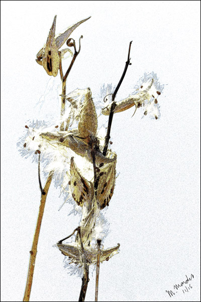
Milkweed
by Michael Mardus
12/21/2021
Richtungsweisend 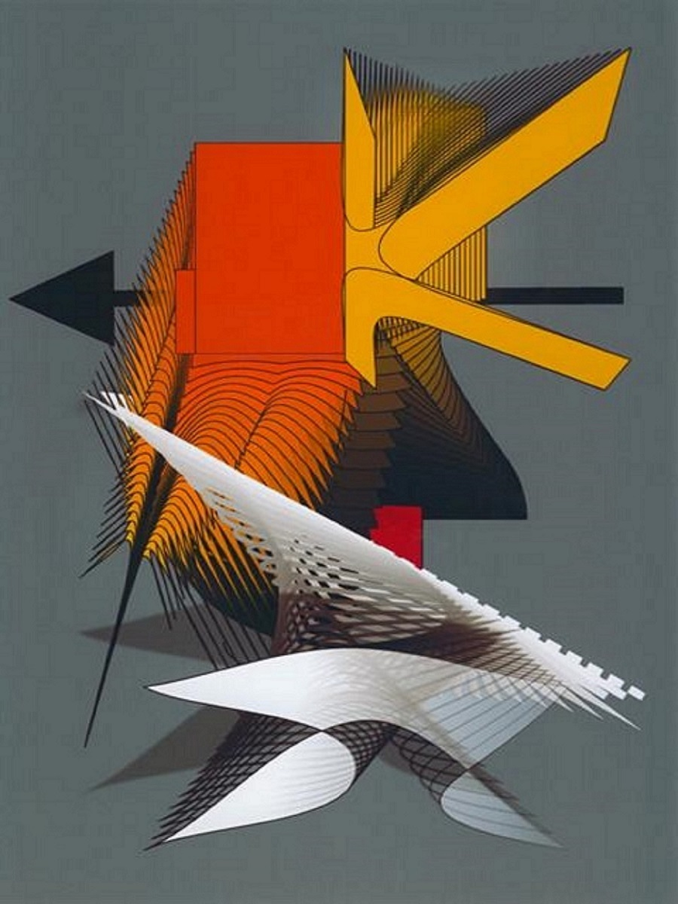
by Marion Schmitz
12/22/2021
Levitation 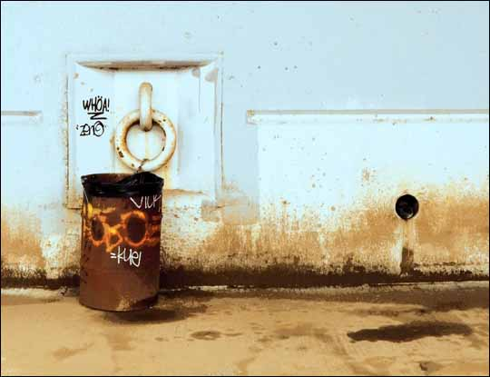
by Russell Streur
12/23/2021
Grenada 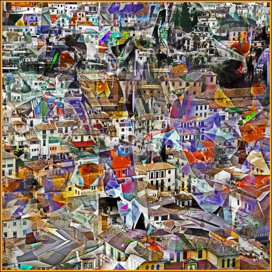
by Guy Garcia
12/24/2021
The Blue Nude 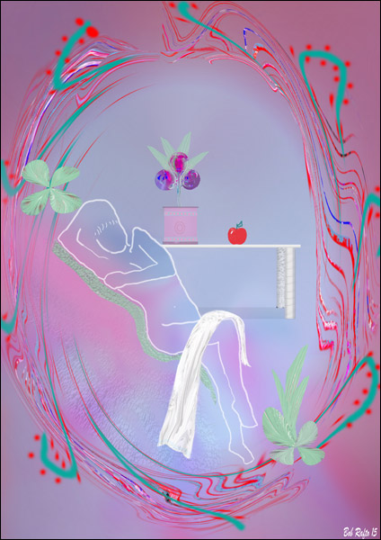
by Bob Rafto
12/25/2021
Cancer 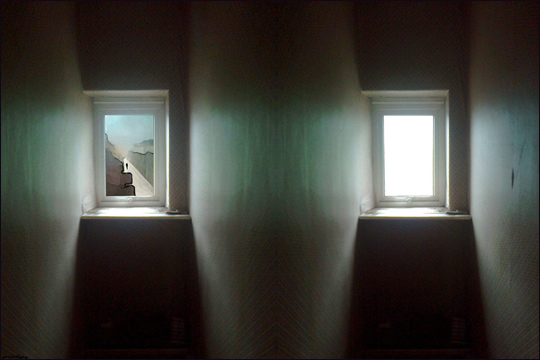
by Gina Topping
12/26/2021
Amarylis 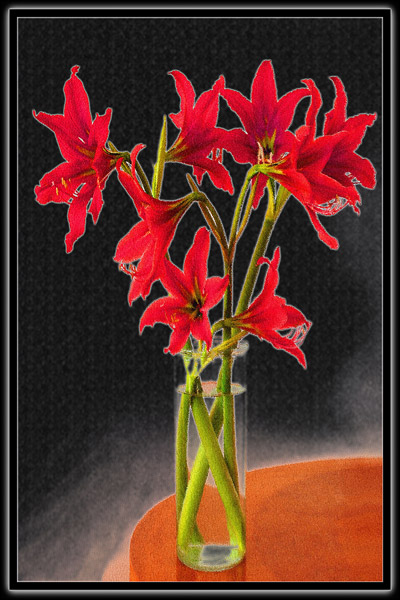
by Bruce Thacker
12/27/2021
The Nest 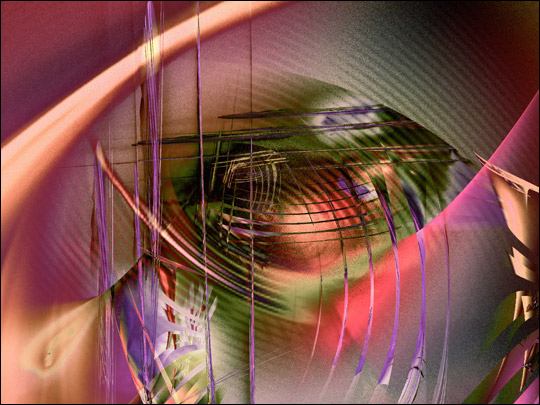
by Renata Spiazzi
12/28/2021
The Candidate 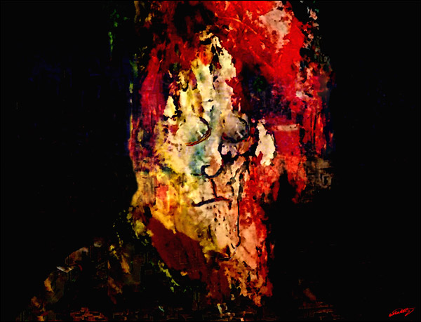
by Wil Watty
12/29/2021
Sunset Pond 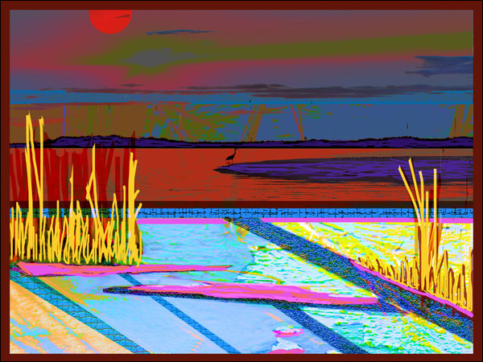
by Rod Whyte
12/30/2021
Who Knows? 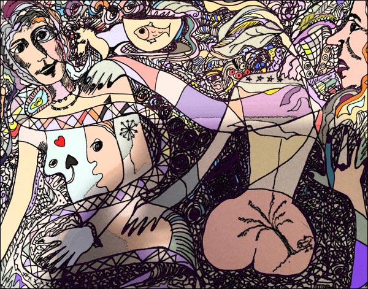
by Joan Myerson Shrager
12/31/2021